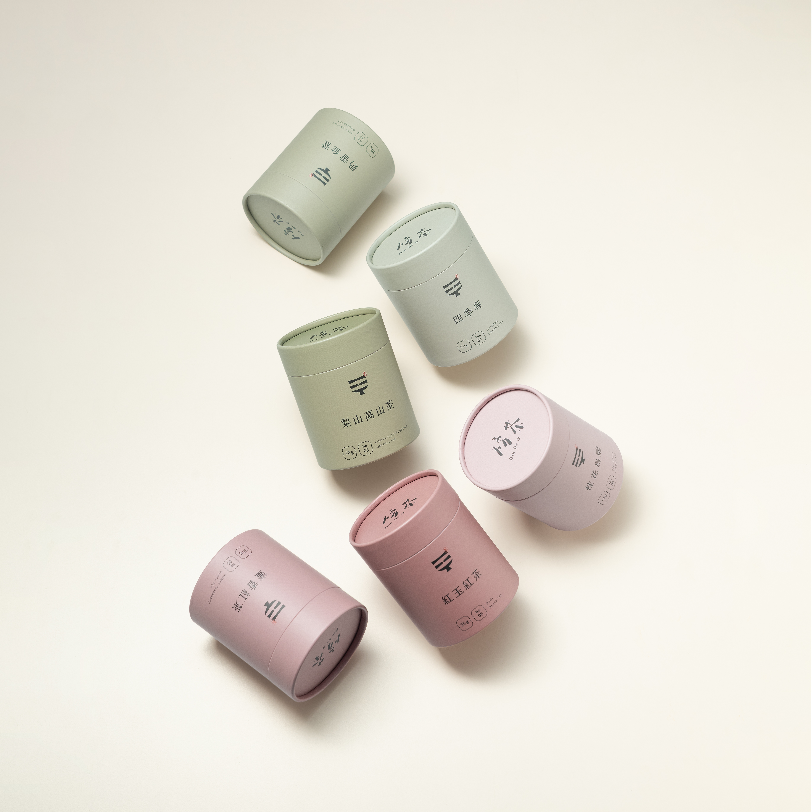
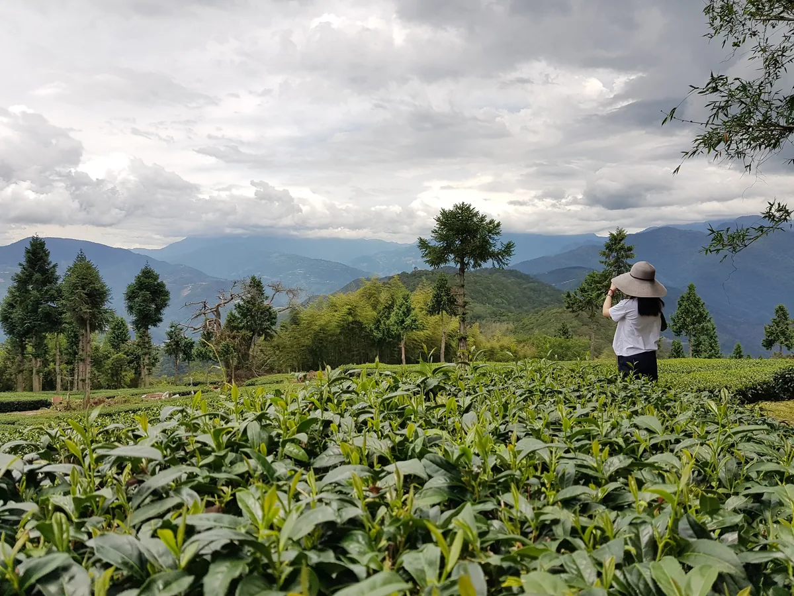
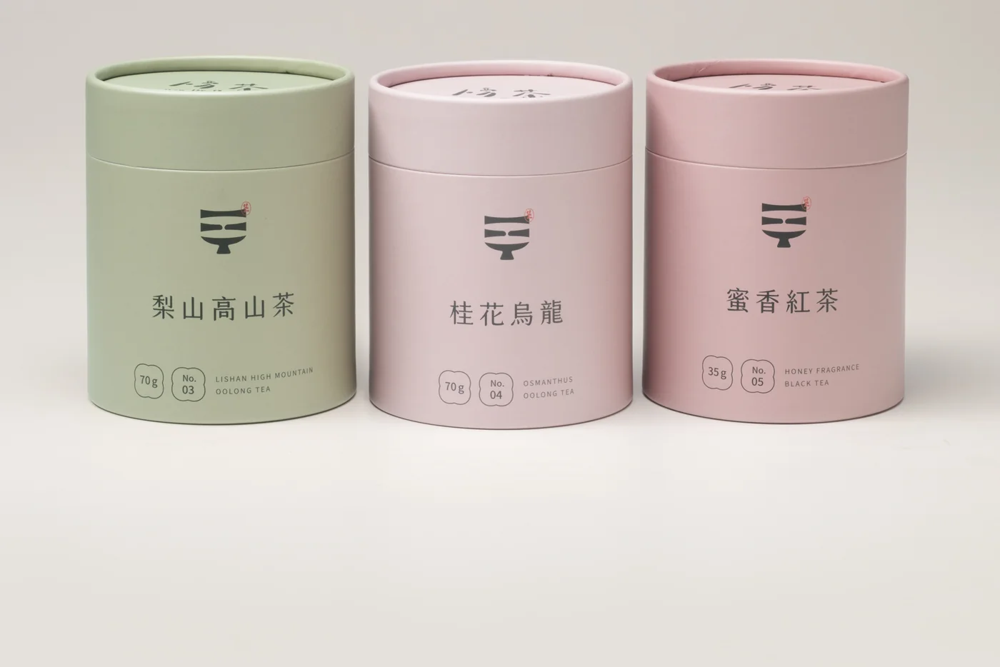
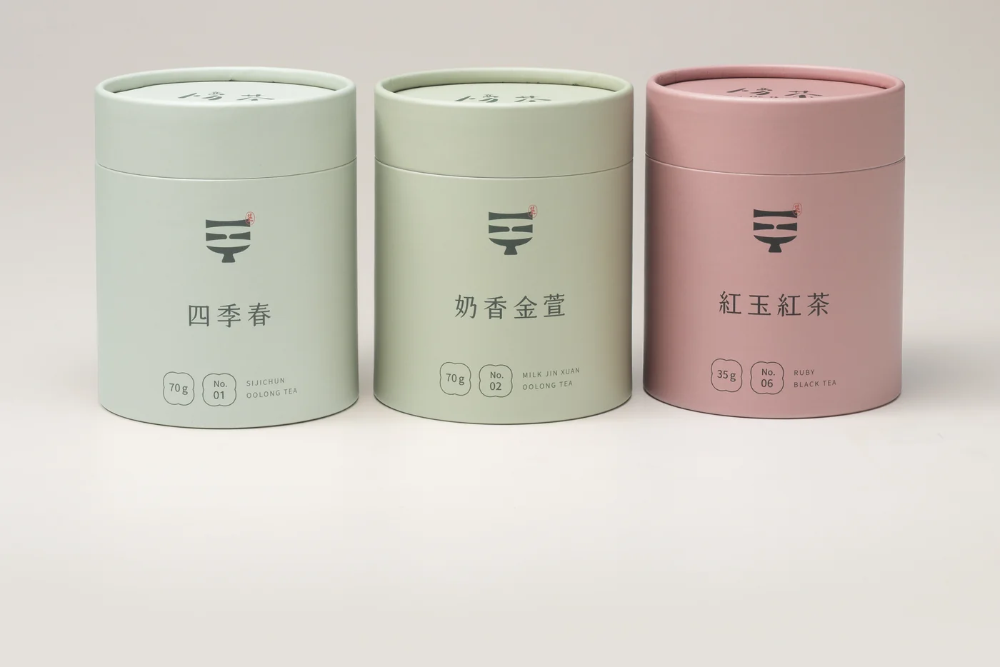
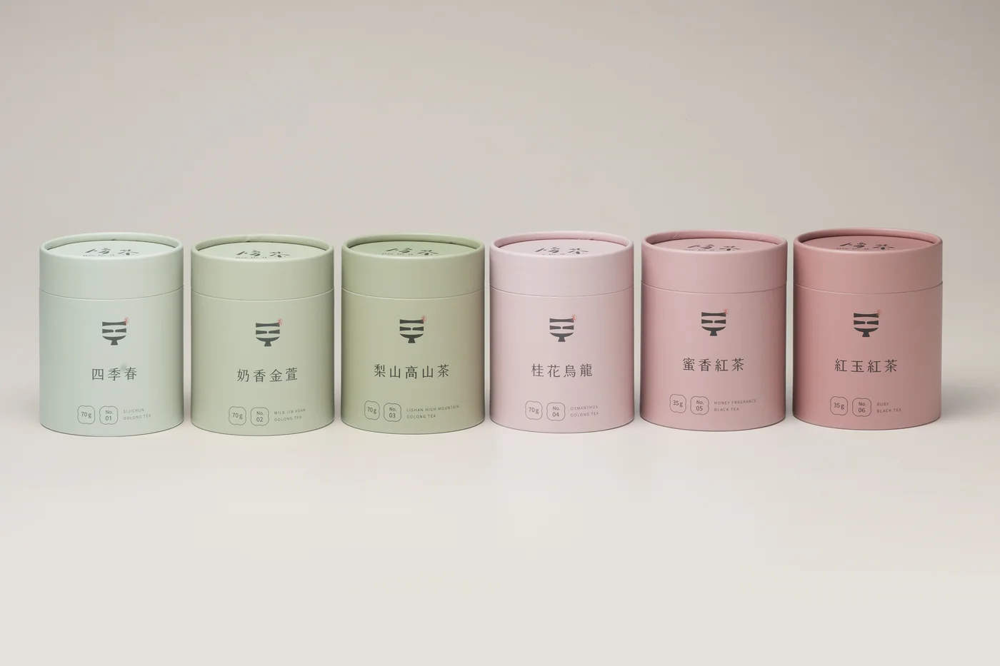
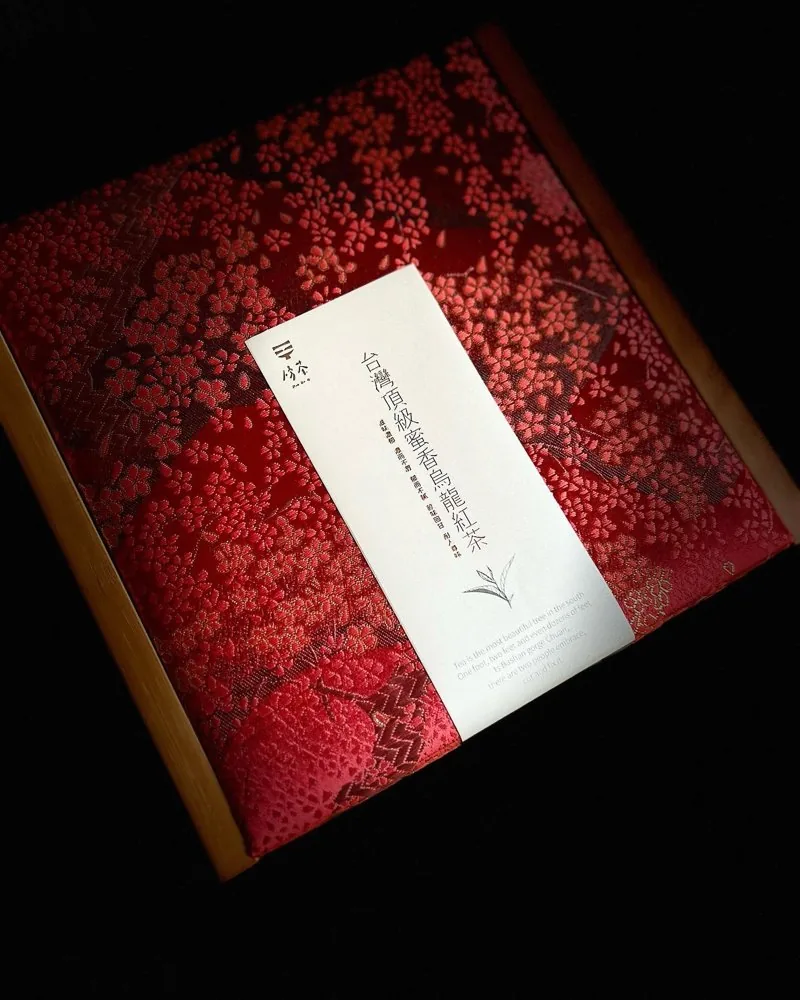
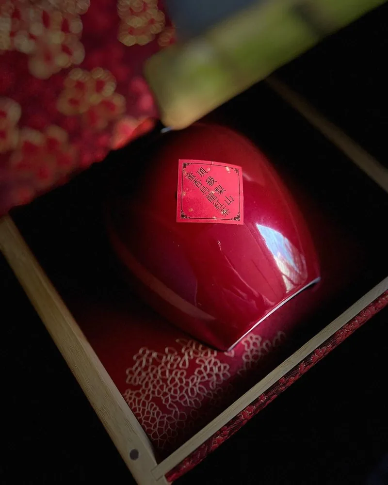
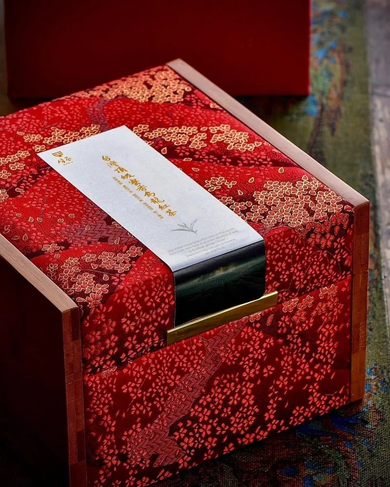
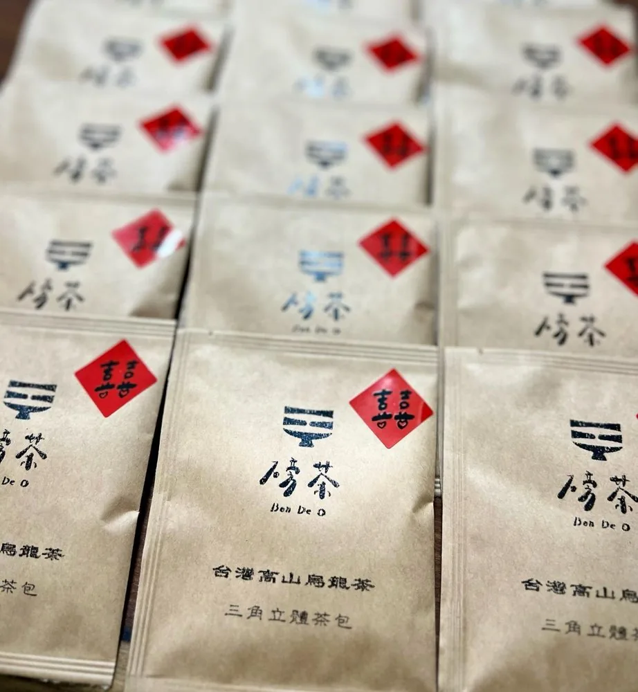
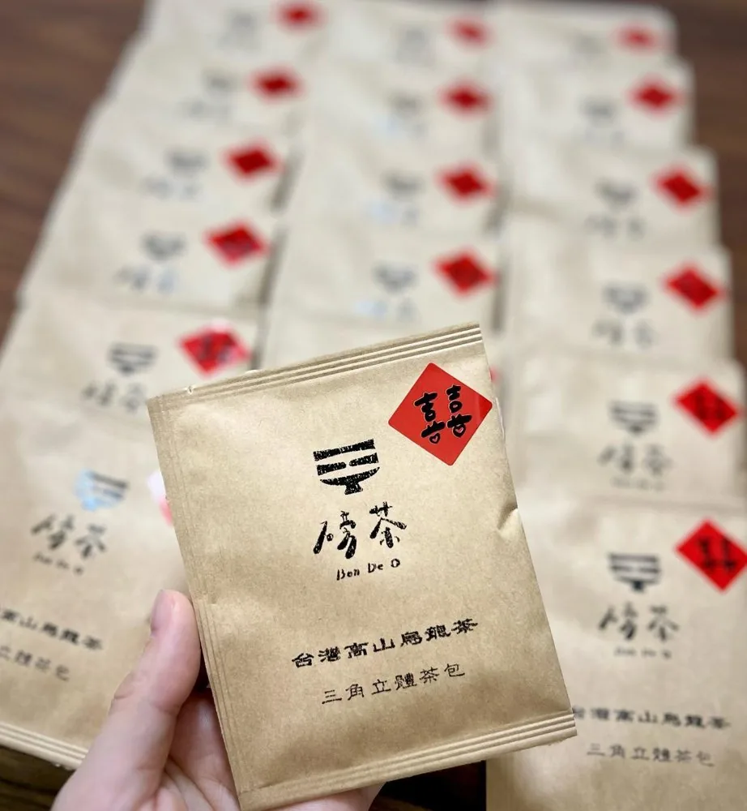

Our Story
點綴每一個日常的，是100%嚴選台灣茶
為您帶來職人好茶相伴的純粹生活。隨著晨醒與日落，我們提案陪伴各種情境的品茶時刻——從一杯磅茶開始，感受更簡單、更愜意的每一天。
自有茶園與契作嚴選，兩種堅持都要留下。
晨霧散去之前，茶樹已經在山裡等了一整夜。
不搶青，不趕焙，手摘一心二葉。
每一罐，都等得起。
日曬、萎凋、殺菁、揉捻、烘焙——
每一道都靠手感，沒有捷徑。
六款茶各有性格，沖泡是唯一能還原山的方式。

為您帶來職人好茶相伴的純粹生活。隨著晨醒與日落，我們提案陪伴各種情境的品茶時刻——從一杯磅茶開始，感受更簡單、更愜意的每一天。

磅茶的誕生，源自海拔1700公尺的茶園秘境，採茶姑娘們頂著烈日，小心翼翼地將鮮嫩的茶葉收攏於背簍中，當班長高聲呼喊「磅茶喔！（Bon De O）」，歡笑聲頓時在茶園中散開——那是準備秤重、卸下滿肩重擔的時刻，儘管指尖長滿了繭，她們的臉上卻掛著滿足的笑容。
「Bon De O」台語「ㄅㄥˇㄉㄟˊㄛ」，是放下壓力、釋放身心的代名詞。帶著這份深植於台灣茶山的記憶，傳承三代的磅茶決定蛻變，用貼近現代生活的輕鬆步調，取代傳統茶業的嚴肅。期盼這杯好茶，能成為您忙碌生活中的一個逗號，讓喝茶成為一件輕鬆、快樂且理所當然的事。
褪去繁複，透過職人把關確保純粹風味，讓好茶自然融入生活每個角落。
去蕪存菁、口感清爽，簡單步驟就能沖出一壺好茶，反覆回沖依然回甘。
不追求繁複調味，只呈現原始風味，讓你依當下心情挑選專屬的那份純粹。
從源頭支持友善土地的茶園，摒棄過度包裝，把永續化為日常實踐。
依循「臺灣特色茶風味輪 2.0」（農業部茶及飲料作物改良場）的香氣分類方式，將六款茶拆解為五個核心氣味維度。點下方任一茶名即可加入比較，最多同時疊圖 3 款。
已選取的茶款會用色塊疊在雷達圖上，方便比較風味差異
分類方式參考「臺灣特色茶風味輪 2.0」（新型專利 第M605950號），僅作分類方法引用，非官方合作或認證。
還在猶豫從哪一款開始，或想一次收藏更多風味？三種組合，對應不同的品茶需求。

省 NT$350
省 NT$270
省 NT$550一次收藏六款風味，最划算的探索方案
加入磅茶會員，把每一次選茶都變成更划算的決定
現買現折，不用等下一次，購物金效期 30 天
首次訂單未滿 $1,000 也能享免運
＊若首購已滿 $1,000，將直接適用「全館滿千免運」，恕無法與首購免運券併用，之後訂單也不再適用（已非首購）
不限身份，單筆訂單滿千即享免運，長期適用
當月壽星登入會員即可領取專屬購物金
用一杯純淨的高山茶，為合作夥伴與員工送上最體面的健康祝賀。100% 台灣原葉高山茶，通過 SGS 農藥殘留檢驗，提供客製化包裝與統編發票，讓三節送禮、商務公關、員工福利都安心有面子。
前往企業採購專區




關於茶的知識、沖泡與選購提案